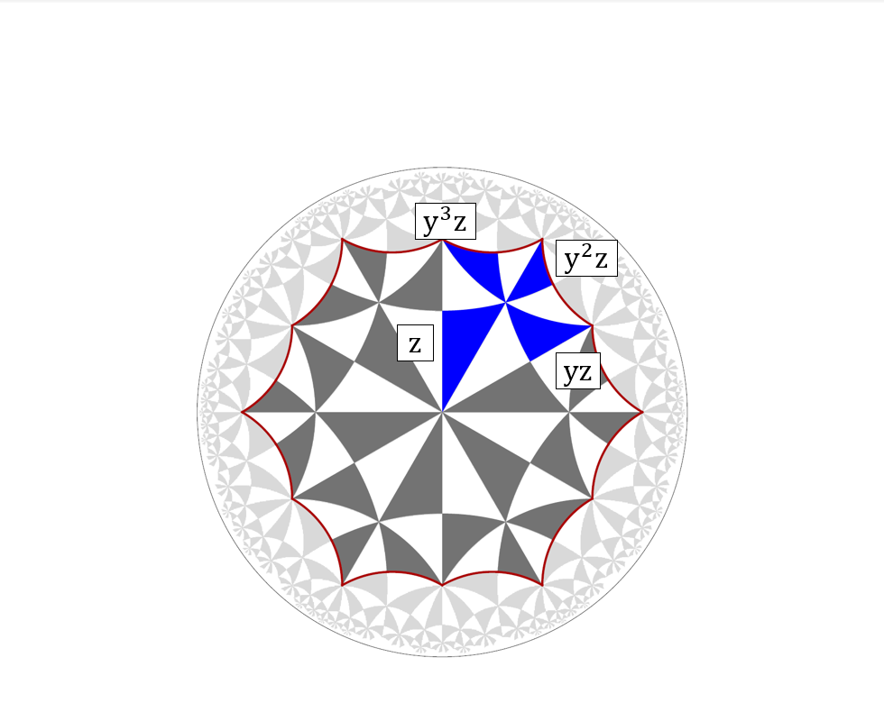
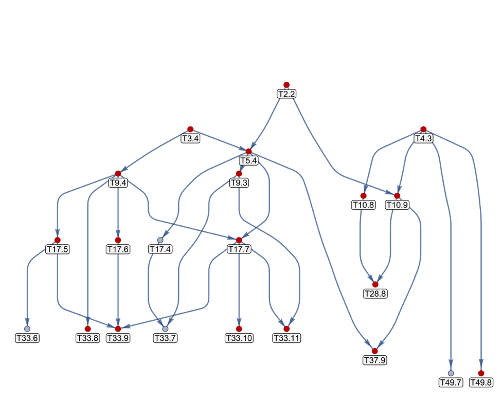
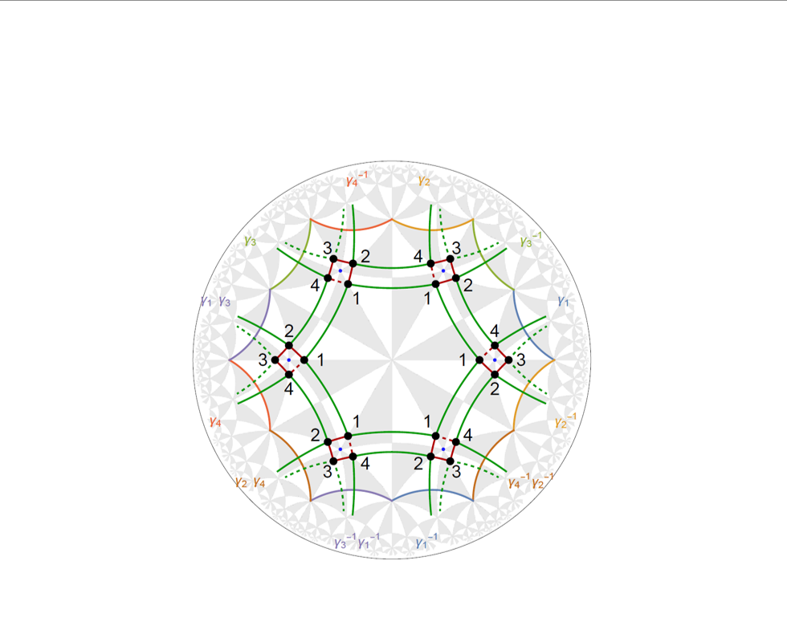

Gallery#
This gallery contains selected examples to illustrate and facillitate the use of the HyperCells and HyperBloch packages. Click on an image below to see its correpsonding GAP and or Mathematica code.

Primitive cell GAP

Subgroup treegraph

Multiple orbitals